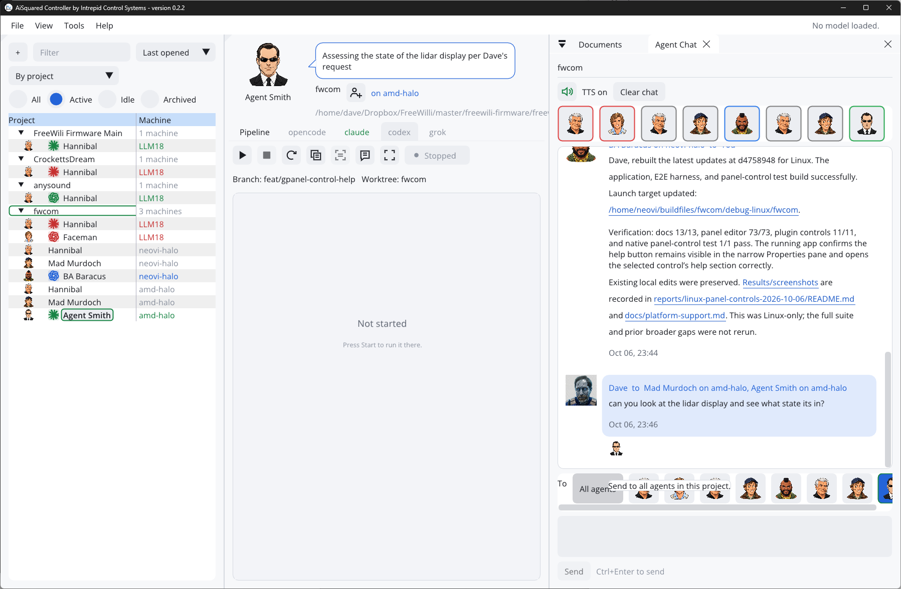
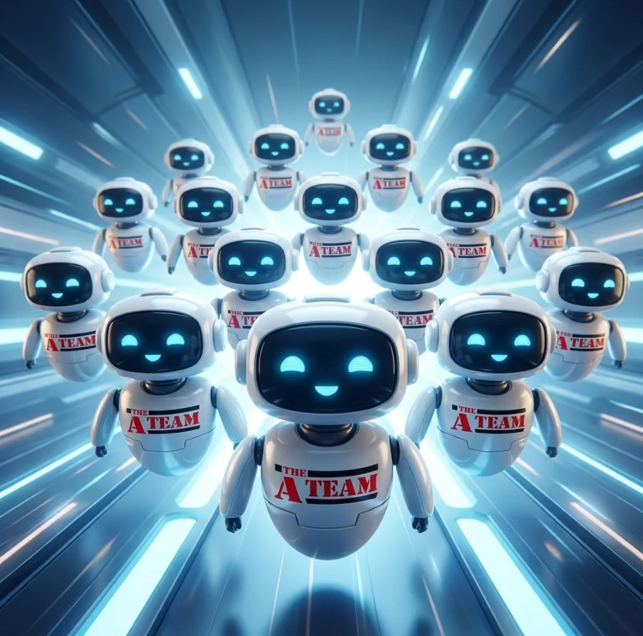

One seat for every coding agent. A native workspace that runs Claude Code, Codex, Grok and local models as one team — across every project and every machine you own.
Native C++ · no browser inside · your agents, your accounts, your hardware
Agents are fast. Herding them isn't.
One coding agent in one terminal is easy. Real work is ten of them, in six projects, on three computers — and you are the only scheduler. AI Squared exists to take that job off your hands.
Twelve terminals. Which one needs you?
Every agent CLI is its own window with its own scrollback. One is still building. One finished forty minutes ago. One has been sitting on a yes-or-no question since lunch. From the outside, all three look identical: a quiet terminal.
AI Squared never guesses from silence. Each agent gets a private reporting channel, so it tells the workbench when it starts a stretch of work, when it has a question, and when it is finished. You get one list where every agent is green, orange, red or blue — and the question that was blocking you is sitting in the Status panel, optionally read aloud.
- Busy working
- Question needs you
- Idle / attention not confirmed busy
- Done reported complete
Agents will bury a single computer.
Each agent wants a compiler, a test run, maybe a browser, maybe a GPU. Four of them building at once turns a good workstation into a space heater — and a local model wants the whole graphics card to itself.
So spread the team out. Link one project across several machines: the workstation runs the local model, the Linux box does the long builds, the Mac checks the Mac build. Each machine keeps its own checkout and its own agents; the copies share one project identity, one roster and one Agent Chat.
An agent in the wrong place? Move to machine… takes its name and persona to another computer. Code travels the way it already does — through Git.
- Linked projects
- Add agent on any machine
- Move to machine
- Create Git checkout remotely
Remote control, without the remote desktop.
Peers let one AI Squared drive the agent sessions another machine owns. Start, stop, restart, watch the output and type into the terminal — it is the owner's real process, mirrored, not a copy. Close your view and the agent keeps going.
Setup is a workgroup name and a password, entered on each machine. No accounts, no certificates, no pairing dance. Machines on the same network find each other; across a VPN you add host:port. With Secure peers enabled, everything on the wire — terminal output, keystrokes, project lists, screenshots — is mutually authenticated and encrypted.
Closing the window does not stop anything either: AI Squared stays resident in the tray, so agents, chat hand-offs and pipelines carry on. There is an Android client for checking on the fleet from the couch.
- TLS + EC J-PAKE
- LAN discovery
- VPN friendly
- Runs in the tray
- Android remote

Projects. Agents. Sessions.
Three levels, and they map onto how you already think about the work.
A project is a folder with a team attached.
A project is a saved reference to a working folder — an existing checkout or a brand-new directory. It carries a project type, a pipeline, a chat history and a roster.
Each project has up to sixteen named agents. An agent is a teammate: a name, a portrait, a persona, a machine. Add one from the team menu with a click.
Each agent has one session per coding tool behind the same tabs — so Hannibal can run Claude while Faceman runs Codex in the same project. Every session keeps its own terminal history, prompt history, reports, questions, launch target and Changes baseline.
Working on two things at once in one repository? Add agent in worktree… gives a teammate its own branch and checkout. The toolbar always shows which branch and worktree an agent is standing in — including remote ones.
- Project → folder + type
- Agent → persona + machine
- Session → one per CLI
- Git worktrees
- By project / By machine
● Reading src/import/reader.cpp
● log_status "CSV reader done, writing tests"
Bring the agents you already use.
AI Squared does not replace your agent CLI and does not sit between you and your account. It runs the real program in a real pseudo-terminal, in the project folder, exactly as you would — then gives it a way to report back.
Claude Code
Per-run MCP configuration plus lifecycle hooks, so activity updates even when the agent says nothing.
Codex
Launch-time MCP settings and a turn-complete notification. Queued prompts wait for its paste guard.
Grok
An AI Squared entry in the project's .grok/config.toml, launched in minimal mode to keep scrollback.
ai2code
Use a local model or a compatible server for editing, shell commands, screenshots and progress reports. OpenCode is also available as an alternative engine.
Agent reports power the shared Status panel, questions and pipeline automation. Configure external CLIs with your own accounts; choose a model provider for ai2code or OpenCode.
Your hardware. Your model.
Run local GGUF models through llama.cpp, or connect an OpenAI-compatible model server. Choose the model that fits the work and your machine.
Check the memory budget before downloading.
Browse models from Hugging Face, compare quantizations, and download GGUF files in the app. Memory estimates help you choose a model before committing to a large download.
Model weights are only part of the budget: context and runtime memory need room too. Local Model Diagnostics shows how memory is being used and when the model spills into system RAM.
Install llama-server separately for local inference, or configure a compatible model endpoint. External model servers and web search use the network.
- GGUF models
- Hugging Face downloads
- Memory estimates
- Local or remote server
A built-in agent, tuned for local models.
ai2code is the coding agent that ships inside AI Squared. It reads and edits project files, runs shell commands, launches the app it built, screenshots it, and reports through the same channel as the big-name CLIs — so pipelines, Agent Chat and screenshots work with a local model out of the box.
It is built around what smaller models are bad at. find_code returns just the lines that answer a question, so the model does not burn its context reading whole files. Old turns are summarised when context fills. /undo takes back the last file edit.
Johnny Five is the same engine as a chat companion: a robot in Agent Chat that talks to your selected model, no project required. Give it web search, page reading, library docs and your own read-only MCP servers — searches go online; inference stays local when you select a local model.
- ai2code built in
- find_code
- launch_app + screenshot
- Web search & MCP
- Local chat
● find_code "where are export arguments parsed"
src/cli/export.py:41-58 · 18 lines
● edit src/cli/export.py
● shell pytest tests/test_export.py
exit 0 · 12 passed
● tests_passed "export --json added, 12/12"
Stop re-explaining how you build.
Every first prompt starts with the same paragraph: which toolkit, where build files go, how to test, what "done" looks like. A project type writes that paragraph once.
A reusable brief the agent reads first.
A project type is a plain Markdown file: your layout, your libraries, your testing rules, your house style, the things you are tired of correcting. Pick one in the New Project dialog and it travels with the project.
In Planning, type what you want built and press Generate. The agent receives your description, the type's brief and the reporting instructions together — so its very first move already follows your conventions.
Types ship for a native C++ desktop app, embedded firmware, a Python command-line tool and a no-build web app. Edit them, or write your own for the kind of work your team actually does. One shipped type even builds a new persona team from a folder of pictures.
- Markdown briefs
- Icon + description
- Edit in app
- Planning → Generate
- Your own types
C++ desktop app
Native C++20, SDL3 window, docking Dear ImGui interface. The build must be a folder you can copy and run.- build files outside the source tree
- end-to-end tests with the UI test engine
- commit after each feature
- the GUI must scale and look modern
Queue the work. Go to bed.
This is the most powerful tool in the box. The Pipeline turns a list of prompts into a production line: one task, one fresh session, an optional milestone — then the next.
task_complete, not for a quiet terminal.A backlog that works itself down.
Tick the prompts you want and press Automate. Entries run in order on the machine that owns the project — and you can drive that from another computer. Each task starts a fresh session for its selected agent, with its own conversation context.
With the default milestone prompt, completed tasks are followed by a commit. Review the history alongside the session's Changes view to see what moved.
Entries name both a persona and a coding tool, so the pipeline can play to strengths: Claude for the refactor, Codex for the tests, the local model for the bulk edits that never need to leave the building.
Honest fine print: Automate is a conveyor, not a judge. Completion reports, including failed-tests reports, advance the queue. Questions need your attention. The milestone prompt is configurable and can be disabled. Review the milestone prompt in Settings before pointing it at a folder with unrelated edits.
Agents feed the queue
An agent that trips over a bug outside its assignment calls add_pipeline_item with the evidence and repro steps. It lands in the Pipeline, unticked, for you to approve — instead of the agent wandering off-task or forgetting it.
Recurring tasks
Give an entry an interval and it becomes a scheduled job: dependency sweeps, nightly test runs, a daily docs check. Runs never overlap in a project, missed intervals do not pile up, and it keeps working with the window closed.
Any machine
Manual runs can target another reachable machine. Automate and recurring tasks run on the project's owning machine; you can edit and control that queue remotely. Linked project folders stay on their owners.
Not ten terminals. A team.
Give agents names, faces and jobs, put them in one room, and something useful happens: you start delegating instead of typing.
Ask Hannibal. He'll ask BA.
Agent Chat is the project's shared room. Send to everyone or click the faces you want. Say "Hannibal, build the importer, verify it, then have BA document it" and that is what happens: Hannibal does the work, messages BA Baracus through AI Squared, waits for the reply, and reports back to you.
These are your real project agents talking — not an agent quietly role-playing a helper inside its own head. Messages land in a saved inbox, reach idle agents as a prompt, and work across linked machines. Sending to a stopped teammate starts it.
A small face appears under a message when a teammate has read it. No "acknowledged!" chatter, no wasted turns. The face row on top is the whole team's status at a glance: gray for stopped, red for idle or attention, orange for questions, green for working, and blue for done.
- All agents or pick faces
- Agent ↔ agent
- Across machines
- Read receipts
- Clickable file links
- Spoken replies
A face, a role, a skill file, a voice.
A persona is a small folder: a picture, a tagline, a default coding tool, a persona.md that sets how the agent behaves and a skill.md that says what it is good at. That text is handed to the agent when it starts — so each agent starts with instructions for its role.
The built-in team is ready to go. Duplicate it and edit, or let an agent build a new group for you from a folder of photos. Your own user persona gives agents your name and puts your picture on your messages.
And they can talk. Assign each persona a voice — a system voice, or one cloned from a few seconds of audio by the built-in speech engine, running entirely on your machine. Questions and completions are read aloud in character, which turns out to be the fastest status display there is.
- persona.md
- skill.md
- Default coding tool
- Voice cloning, local
- Teams from photos

Hannibal
I love it when a plan comes together
Faceman
My slop is beautiful UX
Mad Murdoch
I am crazy enough to do anything
BA Baracus
I pity the fool with bugs
Agent Smith
I'm inevitable, but not yet
The parts you find on day two.
None of these is the headline. Two of them — the screenshot tool and recordings — you will end up using every day.
Show it. Don't describe it.
The first version of a GUI is the easy part. The real work is the chiseling: that button is two pixels low, this panel is too cramped, those labels do not line up. Try saying that in words and you will type a paragraph and still be misunderstood.
So every agent toolbar has a Screenshot button. AI Squared steps out of the way, you drag a box around the exact thing you mean, and the picture is saved with its path already on your clipboard. Paste it into the terminal, add five words — "line these up" — and the agent is looking at precisely what you are looking at.
It is the single most useful habit for polishing an interface: point, paste, fix, repeat. And it works in the other direction too — agents can take their own screenshots of the app they just built, so they check their work before telling you it is done.
- Drag a region
- Path on the clipboard
- Paste into the terminal
- Screenshot viewer
- Agents can look too
> the Apply button sits lower than the Filter field. line them up.
A time-lapse of the whole session. With you in it.
Press Record on an agent and AI Squared keeps a snapshot every second. Afterwards, Make video turns hours of work into a short MP4: the terminal beside Agent Chat, an elapsed-time counter, and — if you switch it on — your webcam in the corner.
The webcam is what makes it watchable. A terminal scrolling by is a log; a terminal with a person reacting to it is a story you can show a customer, a team, or a conference room.
The edit is done for you. Idle stretches are skipped, the video slows down around each prompt you typed so it can be read, the agent's own screenshots pop up as it takes them, and every file path is blurred. Pick a length and the recording is sped up to fit.
- Webcam picture-in-picture
- Idle time skipped
- Prompts highlighted
- Paths blurred
- 720p / 1080p
Changes
See every file an agent touched since its session began — a diff per file, picture previews for images. Work that was already in the folder is not blamed on the new run, and committing mid-session does not hide anything.
Launch app
When an agent finishes a build it registers the result, and a green Launch app button appears on its toolbar. One click runs what that agent built — even from another worktree.
Status
Every report and every question from every agent in the project lands in one panel. Answer a pending question right there, or jump to the terminal that asked it.
Agents that can see
With screenshots allowed, an agent can list the screens and windows and capture the app it just launched — so "the dialog looks right" is something it checked, not something it assumed.
Keeps running
Close the window and everything carries on in the tray: agents, chat hand-offs, pipelines, schedules. Reopen to the same live terminals and half-typed drafts.
Attention, spoken
A question or a failed test run can be announced out loud, from a shuffled list of phrases you can edit. You stop polling the screen and start listening for your name.
Online tools for local models
Web search, page reading, current library docs, public code search and your own read-only MCP servers — available to ai2code and Johnny Five, switchable one by one.
Docs & history
Markdown opens in a built-in Documents view, tables and all. Prompt history, saved transcripts and chat history survive restarts. Help is one F1 away.
Native, not a web page
C++20, SDL3 and Dear ImGui from one source tree for Windows, macOS, Linux and Android. Themes and UI scaling are built in, and it extracts from a ZIP — no installer, no build tools.
Platforms
- Windows
- x64 with AVX2 · the most tested platform · CPU or NVIDIA CUDA speech package
- macOS
- Apple Silicon (arm64), macOS 26 or newer
- Linux
- x86-64 desktop, glibc 2.38 or newer
- Android
- Remote client, built from source
You bring
- Agent CLIs
- Installed and signed in separately, with your own accounts
- Git
- For branch, worktree and Changes snapshots
- llama.cpp
- llama-server for local models; GGUF files download in-app
- App runtime
- No Python or Node needed for the app itself; your agent CLIs and projects may need their own runtimes and build tools
Network
- Peers
- TCP 11437, mutually authenticated TLS with EC J-PAKE
- Discovery
- UDP 11438, anonymous markers only
- MCP
- Loopback only, a private address per launch
- Model API
- Loopback, OpenAI-compatible, optional
Good to know
- Files
- Linking machines does not sync source. Use Git
- Permissions
- Agents run with your user account's permissions
- Reboots
- Background sessions do not survive a reboot
- Versions
- Update both ends for remote features
One seat. Every agent.
Every machine.
Extract the ZIP, launch, and add a project. Choose an installed agent CLI or configure a model, then press Start. AI Squared gives your agents somewhere to work together.
Windows downloads and setup instructions on GitHub · features vary by package
macOS, Linux and older releases on Intrepid GitLab · GitLab sign-in required